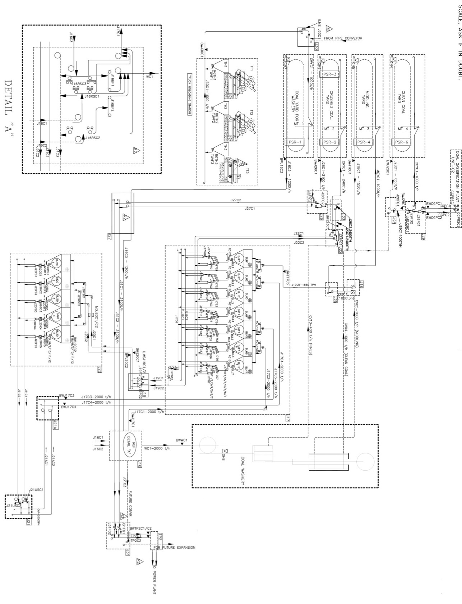

Engineering drawing
Draw and edit plant zones, routes and equipment markers. Select to move; use two fingers to pan/zoom.

Drag to pan · Pinch or use ＋ / − to zoom
Draw and edit plant zones, routes and equipment markers. Select to move; use two fingers to pan/zoom.
